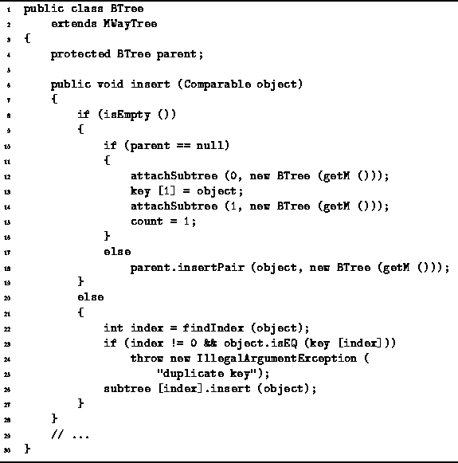
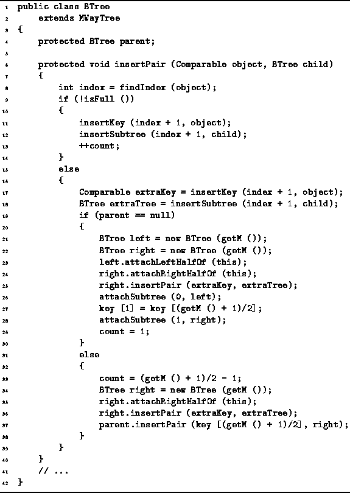
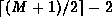
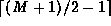
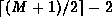
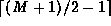

Data Structures and Algorithms
with Object-Oriented Design Patterns in Java
Data Structures and Algorithms
with Object-Oriented Design Patterns in Java
Insertion in a B-tree is a two-pass process.
The first pass moves down the tree from the root
in order to locate the leaf in which the insertion is to begin.
This part of the algorithm is quite similar to
the find method given in Program  .
The second pass moves from the bottom of the tree back up to the root,
splitting nodes and inserting them further up the tree as needed.
Program gives the code for the first (downward) pass
(insert method)
and the Program gives the code for the second (upward) pass
(insertPair method).
.
The second pass moves from the bottom of the tree back up to the root,
splitting nodes and inserting them further up the tree as needed.
Program gives the code for the first (downward) pass
(insert method)
and the Program gives the code for the second (upward) pass
(insertPair method).

Program: BTree class insert method.
In the implementation shown,
the downward pass starts at the root node and descends the tree
until it arrives at an external node.
If the external node has no parent,
it must be the root and, therefore, the tree is empty.
In this case,
the root becomes an internal node containing a single key
and two empty subtrees (lines 12-14).
Otherwise, we have arrived at an external node in a non-empty tree
and the second pass begins by calling insertPair
to insert the pair  in the parent.
in the parent.
The upward pass of the insertion algorithm is done by the
recursive insertPair method shown in Program .
The insertPair method takes two arguments.
The first, object, is a Comparable object
and the second, child, is a BTree.
It is assumed that all the keys in child are strictly greater than
object.

Program: BTree class insertPair method.
The insertPair method calls findIndex to determine the position in the array of keys at which pair (object,child) should be inserted (line 8). If this node is full (line 9), the insertKey is called to insert the given key at the specified position in the key array (line 11) and insertSubtree is called to insert the given tree at the specified position in the subtree array (line 12).
In the event that the node is full, the insertKey method returns the key which falls off the right end of the array. This is assigned to extraKey (line 17). Similarly, the insertSubtree method returns the tree which falls of the right end of the array. This is assigned to extraTree (line 18).
The node has now overflowed and it is necessary to balance the B-tree.
If the node overflows and it is the root (line 19),
then two new B-trees, left and right are created (lines 21-22).
The first  keys and
keys and  subtrees of the
given node are moved to the left tree by the attachLeftHalfOf
method (line 23);
and the last  keys
and  subtrees of
the given node are moved to the right tree
by the attachRightHalfOf method (line 24).
Then, the pair (extraKey,extraTree) is inserted
into the right tree (line 25).
subtrees of the
given node are moved to the left tree by the attachLeftHalfOf
method (line 23);
and the last  keys
and  subtrees of
the given node are moved to the right tree
by the attachRightHalfOf method (line 24).
Then, the pair (extraKey,extraTree) is inserted
into the right tree (line 25).
The left-over key is the one in the middle of the array,
i.e.,  .
Finally, the root node is modified
so that it contains the two new subtrees
and the single left-over key (lines 26-29).
.
Finally, the root node is modified
so that it contains the two new subtrees
and the single left-over key (lines 26-29).
If the node overflows and it is not the root,
then one new B-tree is created, right (line 34).
The last keys
and subtrees of the
given node are moved to the left tree
by the attachRightHalfOf method (line 35)
and the pair (extraKey,extraTree)
is inserted in the right tree (line 36).
The first  keys and
keys and  subtrees of
the given node remain attached to it.
subtrees of
the given node remain attached to it.
Finally, the insertPair method calls itself recursively
to insert the left-over key,  ,
and the new B-tree, right, into the parent of this (line 37).
This is the place where the parent field is needed!
,
and the new B-tree, right, into the parent of this (line 37).
This is the place where the parent field is needed!
 Copyright © 1998 by Bruno R. Preiss, P.Eng. All rights reserved.
Copyright © 1998 by Bruno R. Preiss, P.Eng. All rights reserved.